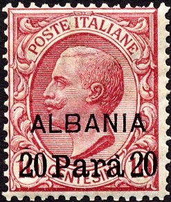
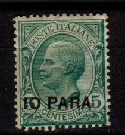
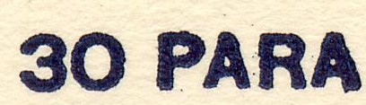
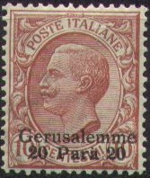
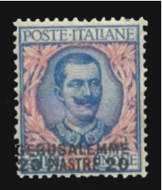
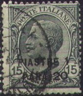
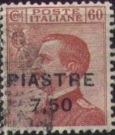
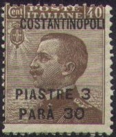

Return To Catalogue - Italy - 'ESTERO' on Italy - 'BENGASI' on Italy
Note: on my website many of the
pictures can not be seen! They are of course present in the
catalogue;
contact me if you want to purchase the catalogue.
'10 Para 10' on 5 c green (eagle) '10 Para 10' on 5 c green (Victor Emanuel III) '20 Para 20' on 10 c red (Victor Emanuel III) '35 Para 35' on 20 c orange (Victor Emanuel III) '40 Para 40' on 25 c blue (Victor Emanuel III) '80 Para 80' on 50 c violet (Victor Emanuel III, 1908)
Value of the stamps |
|||
vc = very common c = common * = not so common ** = uncommon |
*** = very uncommon R = rare RR = very rare RRR = extremely rare |
||
| Value | Unused | Used | Remarks |
| 10 pa on 5 c | ** | ** | Eagle |
| 10 pa on 5 c | RR | RR | Victor Emanuel III |
| 20 pa on 10 c | *** | *** | |
| 35 pa on 20 c | *** | *** | |
| 40 pa on 25 c | *** | *** | |
| 80 pa on 50 c | *** | *** | |

Forged overprint
(reduced size)
'10 Para 10' on 5 c green (eagle) '10 Para 10' on 5 c green (Victor Emanuel III, 1908) '20 Para 20' on 10 c red (Victor Emanuel III, 1908) '30 Para 30' (violet) on 15 c black (Victor Emanuel III, 1908) '35 Para 35' on 20 c orange (Victor Emanuel III) '40 Para 40' on 25 c blue (Victor Emanuel III) '40 Para 40' on 25 c blue (Victor Emanuel III, 1908, other type) '80 Para 80' on 50 c violet (Victor Emanuel III, 1908) '80 Para 80' on 50 c violet (Victor Emanuel III, 1908, other type)
Value of the stamps |
|||
vc = very common c = common * = not so common ** = uncommon |
*** = very uncommon R = rare RR = very rare RRR = extremely rare |
||
| Value | Unused | Used | Remarks |
| 10 pa on 5 c | ** | ** | Eagle |
| 10 pa on 5 c | * | * | Victor Emanuel III, 1908 |
| 20 pa on 10 c | * | * | 1908 |
| 30 pa on 15 c | * | * | |
| 35 pa on 20 c | *** | *** | |
| 40 pa on 25 c | *** | *** | |
| 40 pa on 25 c | * | * | 1908, other type |
| 80 pa on 50 c | *** | *** | |
| 80 pa on 50 c | *** | *** | On other type |

Forged Fournier overprint as found in a Fourier Album.



(Reduced size)
'10 PARA' on 5 c green '20 PARA' on 10 c red '30 PARA' (red or black) on 15 c black '1 PIASTRA' on 25 c blue '2 PIASTRE' on 50 c violet '4 PIASTRE' on 1 L brown and green '4 PIASTRE 4' on 1 L brown and green '20 PIASTRE' on 5 L blue and red '20 PIASTRE 20' on 5 L blue and red
Many of these stamps were purely speculative.
(Speculative issue)
For example, only 99 stamps of the above 4 Pi on 1 L were printed. The above one is the only one on cover!
Value of the stamps |
|||
vc = very common c = common * = not so common ** = uncommon |
*** = very uncommon R = rare RR = very rare RRR = extremely rare |
||
| Value | Unused | Used | Remarks |
| 10 pa on 5 c | ** | ** | Two types, second type: R |
| 20 pa on 10 c | ** | ** | Two types, second type: R |
| 30 pa on 15 c | * | * | Usually with red '30 PARA', with black '30 PARA': RR Exists in a second type: *** |
| 1 Pi on 25 c | *** | *** | Two types, second type: RR |
| 2 Pi on 50 c | RR | RR | Two types |
| '4 PIASTRE' on 1 L | RRR | RRR | Two types |
| '4 PIASTRE 4' on 1 L | R | R | Two types |
| '20 PIASTRE' on 5 L | RRR | RRR | Two types |
| '20 PIASTRE 20' on 5 L | R | R | Two types, second type: RR |
A "1 PIASTRA 1" (red) on 25 c blue was issued for Crete.

Two forged overprints made by Fournier as they can be found in
'The Fournier Album of Philatelic Forgeries'


10 pa on 5 c green 20 pa on 10 c red 30 pa (violet) on 15 c black 1 Pi on 25 c blue 2 Pi on 50 c violet 4 Pi on 1 L brown and green 20 Pi on 5 L blue and red 40 Pi on 10 L olive and red
Value of the stamps |
|||
vc = very common c = common * = not so common ** = uncommon |
*** = very uncommon R = rare RR = very rare RRR = extremely rare |
||
| Value | Unused | Used | Remarks |
| Prices same for all cities | |||
| 10 pa on 5 c | c | c | |
| 20 pa on 10 c | c | c | |
| 30 pa on 15 c | *** | *** | |
| 1 Pi on 25 c | * | * | |
| 2 Pi on 50 c | ** | ** | |
| 4 Pi on 1 L | *** | *** | |
| 20 Pi on 5 L | R | R | |
| 40 Pi on 10 L | RR | RR | |
For Scutari di Albania a 4 pa on 2 c brown was also issued. A further overprint 'CENT 20' was issued for Durazzo, Scutari di Albania and Valona on 30 pa on 15 c black. The 30 pa on 15 c for Valona exists in two types: 'Valona 30 para 30' or 'VALONA 30 PARA 30' (1916). More stamps with overprint 'SMIRNE' were issued in 1922.
Value of the stamps |
|||
vc = very common c = common * = not so common ** = uncommon |
*** = very uncommon R = rare RR = very rare RRR = extremely rare |
||
| Value | Unused | Used | Remarks |
| 4 pa on 2 c | c | * | Scutari di Albania |
| 20 c on 30 pa on 15 c | *** | R | Durazzo |
| 20 c on 30 pa on 15 c | *** | R | Scutari di Albania |
| 20 c on 30 pa on 15 c | * | *** | Valona |
10 pa on 5 c green 20 pa on 10 c red 30 pa on 15 c black 1 Pi on 25 c blue 2 Pi on 50 c violet
Value of the stamps |
|||
vc = very common c = common * = not so common ** = uncommon |
*** = very uncommon R = rare RR = very rare RRR = extremely rare |
||
| Value | Unused | Used | Remarks |
| 10 pa on 5 c | c | c | |
| 20 pa on 10 c | * | * | |
| 30 pa on 15 c | * | * | |
| 1 Pi on 25 c | * | * | |
| 2 Pi on 50 c | ** | ** | |
4 Pi on 1 L brown and green 20 Pi on 5 L blue and red 40 Pi on 10 L olive and red
Value of the stamps |
|||
vc = very common c = common * = not so common ** = uncommon |
*** = very uncommon R = rare RR = very rare RRR = extremely rare |
||
| Value | Unused | Used | Remarks |
| 4 Pi on 1 L | *** | *** | |
| 20 Pi on 5 L | R | R | |
| 40 Pi on 10 L | RR | RR | |






'PARA 10' on 1 c brown (1922) 'PARA 20' on 2 c brown (1922) '30 PARA' on 2 c brown (1922) '30 PARA' on 5 c green (1922, two types) 'PARA 30' on 5 c green (1922) '1 PIASTRE' on 5 c green 'PIASTRE 1 PARA 20' on 15 c black (1922) 'PIASTRE 1 PARA 25' on 25 c blue (1923) 1 1/2 Pi on 10 c red (1922) '1,50 PIASTRE' on 20 c orange (1922) '1,50 PIASTRE' on 25 c blue (1922) '2 PIASTRE' on 15 c black 'PIASTRE 3' on 20 c orange (1922) 3 Pi on 25 c blue (1922) 'PIASTRE 3 PARA 30' on 25 c blue (1922) 'PIASTRE 3 PARA 30' on 40 c brown (1923) 3,75 Pi on 40 c brown (1922) 3 3/4 Pi on 40 c brown (1922) '4 PIASTRE' on 20 c orange 4 Pi 20 pa on 50 c violet 'PIASTRE 4,50' on 50 c violet (1922) '4 1/2 PIASTRE' on 50 c violet (1922) '5 PIASTRE' (2 types?) on 25 c blue 'PIASTRE 7 PARA 20' on 60 c red (1922) 7,50 Pi on 60 c orange (1922) 7 1/2 Pi on 85 c brown (1922) 7 1/2 Pi on 1 L brown and green (overprint red, 1922) '10 PIASTRE' on 60 c red 15 Pi on 85 c brown (1922, 2 types?) 'PIASTRE 15' on 1 L brown and green (1922) '15 PIASTRE' on 1 L brown and green (1922) 18 Pi 30 pa on 1 L brown and green (1923) 18,75 Pi on 1 L brown and green (1922) 45 Pi on 5 L blue and red (1922, two types?) 90 Pi on 10 L olive and red (1922, two types?)
Value of the stamps |
|||
vc = very common c = common * = not so common ** = uncommon |
*** = very uncommon R = rare RR = very rare RRR = extremely rare |
||
| Value | Unused | Used | Remarks |
| 10 pa on 1 c | * | * | |
| 20 pa on 2 c | * | * | |
| 30 pa on 2 c | * | * | |
| '30 PARA' on 5 c | *** | *** | 30 in front of PARA |
| '30 PARA' on 5 c | c | c | 30 above PARA |
| 'PARA 30' on 5 c | *** | *** | |
| 1 Pi on 5 c | RR | RR | |
| 1 Pi 20 pa on 15 c | * | * | |
| 1 Pi 20 pa on 25 c | * | * | |
| 1 1/2 Pi on 10 c | * | * | |
| 1.50 Pi on 20 c | * | * | |
| 1.50 Pi on 25 c | *** | *** | |
| 2 Pi on 15 c | * | * | |
| 3 Pi on 20 c | * | * | |
| 3 Pi on 25 c | ** | ** | |
| 3 Pi 30 pa on 25 c | * | * | |
| 3 Pi 30 pa on 40 c | * | ** | |
| 3,75 Pi on 40 c | * | * | |
| 3 3/4 Pi on 40 c | * | * | |
| 4 Pi on 20 c | *** | *** | |
| 4 Pi 20 pa on 50 c | ** | ** | |
| 4,50 Pi on 50 c | ** | ** | |
| 4 1/2 Pi on 50 c | *** | *** | |
| 5 Pi on 25 c | *** | *** | |
| 7 Pi 20 pa on 60 c | * | * | |
| 7,50 Pi on 60 c | ** | ** | |
| 7 1/2 Pi on 85 c | *** | *** | |
| 7 1/2 Pi on 1 L | *** | *** | |
| 10 Pi on 60 c | ** | ** | |
| 15 Pi on 85 c | *** | *** | |
| 'PIASTRE 15' on 1 L | *** | *** | |
| '15 PIASTRE' on 1 L | *** | R | |
| 18 Pi 30 pa on 1 L | *** | *** | |
| 18,75 Pi on 1 L | ** | *** | |
| 45 Pi on 5 L | R | R | |
| 90 Pi on 10 L | R | R | |
"COSTANTINOPOLI" written at the middle of the stamp (1922)
20 pa on 5 c green 1 Pi 20 pa on 15 c black 3 Pi on 30 c brown 3 Pi 30 pa on 40 c brown 7 Pi 20 pa on 1 L brown and green
Value of the stamps |
|||
vc = very common c = common * = not so common ** = uncommon |
*** = very uncommon R = rare RR = very rare RRR = extremely rare |
||
| Value | Unused | Used | Remarks |
| 20 pa on 5 c | *** | *** | |
| 1 Pi 20 pa on 15 c | * | * | |
| 3 Pi on 30 c | * | * | |
| 3 Pi 30 pa on 40 c | * | * | |
| 7 Pi 20 pa on 1 L | * | * | |
"COSTANTINOPOLI" written at the top of the stamp (1923)

30 pa on 5 c green 1 Pi 20 pa on 25 c blue 3 Pi 30 pa on 40 c brown 4 Pi 20 pa on 50 c violet 7 Pi 20 pa on 60 c red 15 Pi on 85 c brown 18 Pi 30 pa on 1 L brown and green 45 Pi on 5 L blue and red 90 Pi on 10 L olive and red
Value of the stamps |
|||
vc = very common c = common * = not so common ** = uncommon |
*** = very uncommon R = rare RR = very rare RRR = extremely rare |
||
| Value | Unused | Used | Remarks |
| 30 pa on 5 c | c | c | |
| 1 Pi 20 pa on 25 c | c | * | |
| 3 Pi 30 pa on 40 c | * | * | |
| 4 Pi 20 pa on 50 c | * | * | |
| 7 Pi 20 pa on 60 c | ** | ** | |
| 15 Pi on 85 c | *** | *** | |
| 18 Pi 30 pa on 1 L | *** | *** | |
| 45 Pi on 5 L | *** | *** | |
| 90 Pi on 10 L | R | R | |

20 pa on 5 c green 1 Pi 20 pa on 15 c black 3 Pi on 30 c brown 3 Pi 30 pa on 40 c brown 7 Pi 20 pa on 1 L brown and green
Value of the stamps |
|||
vc = very common c = common * = not so common ** = uncommon |
*** = very uncommon R = rare RR = very rare RRR = extremely rare |
||
| Value | Unused | Used | Remarks |
| 20 pa on 5 c | *** | *** | |
| 1 Pi 20 pa on 15 c | * | * | |
| 3 Pi on 30 c | * | ** | |
| 3 Pi 30 pa on 40 c | * | ** | |
| 7 Pi 20 pa on 1 L | * | *( | |
'Piastre 3.75' on 25 c blue
Value of the stamps |
|||
vc = very common c = common * = not so common ** = uncommon |
*** = very uncommon R = rare RR = very rare RRR = extremely rare |
||
| Value | Unused | Used | Remarks |
| 3.75 Pi on 25 c | * | * | |
'1 PIASTRA 1' on 25 c red '60 Para 60' on 30 c blue and red
Value of the stamps |
|||
vc = very common c = common * = not so common ** = uncommon |
*** = very uncommon R = rare RR = very rare RRR = extremely rare |
||
| Value | Unused | Used | Remarks |
| 1 Pi on 25 c | ** | ** | |
| 60 pa on 30 c | *** | *** | |
15 Pi on 30 c blue and red 15 Pi on 30 c blue and red (with overprint "COSTANTINOPOLI", 1923) 15 Pi on 1,20 L on 30 c blue and red
Value of the stamps |
|||
vc = very common c = common * = not so common ** = uncommon |
*** = very uncommon R = rare RR = very rare RRR = extremely rare |
||
| Value | Unused | Used | Remarks |
| 15 Pi on 30 c | *** | *** | Two types, with large '15': RR |
| 15 Pi on 30 c | *** | *** | With 'COSTANTINOPOLI' |
| 15 Pi on 1.20 L on 30 c | *** | *** | |


10 c orange and red 30 c orange and red 60 c orange and red 1 L blue and red 2 L blue and red 5 L blue and red
Value of the stamps |
|||
vc = very common c = common * = not so common ** = uncommon |
*** = very uncommon R = rare RR = very rare RRR = extremely rare |
||
| Value | Unused | Used | Remarks |
| 10c | ** | ** | |
| 30 c | *** | *** | |
| 60 c | *** | *** | |
| 1 L | ** | ** | |
| 2 L | RR | RR | |
| 5 L | RR | RR | |
These stamps seem to have a control mark consisting of the arms of Italy with crown with inscription "POSTE ITALIANE COSTANTINOPOLI" covering 4 stamps.
Stamps - Briefmarken - Timbres-Poste - Postzegels - Francobolli - Estampillas

{kind=link}
{kind=link}
{kind=link}
{kind=link}